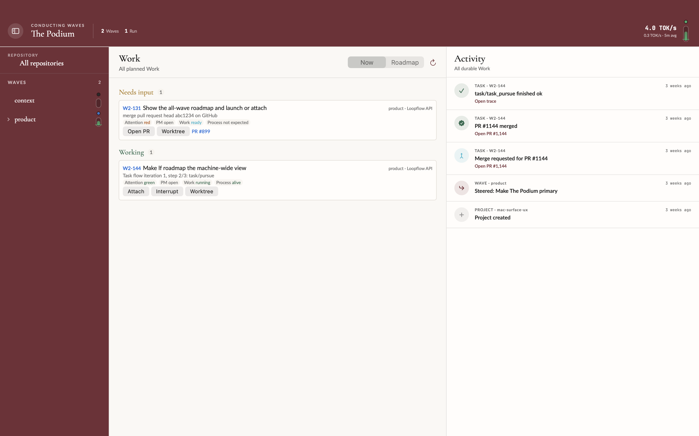
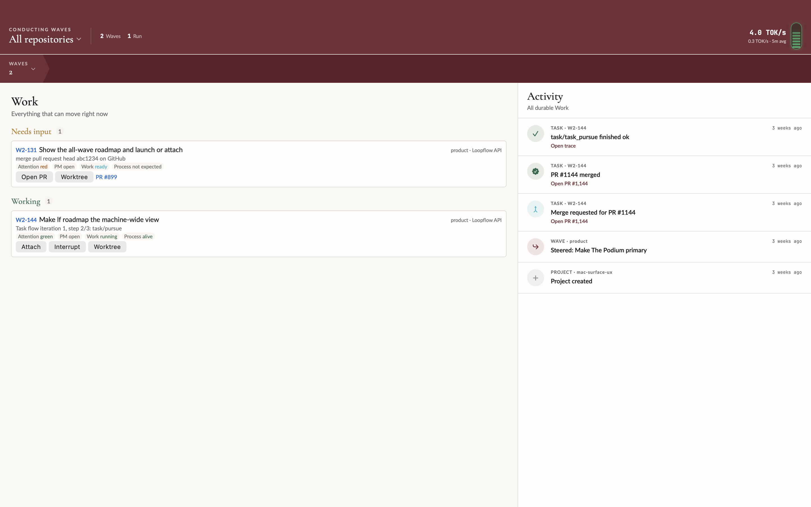

01 / SPACE
Work gets the room.
The persistent left rail disappears. Hierarchy becomes temporary navigation, leaving the selected Work and Activity as the durable frame.
The hierarchy stops occupying the work surface. A path header and temporary drawer cascade replace the permanent Wave Score sidebar; one fader language joins liveness, output, and legal control.
Both frames use the repository-owned mock-waves fixture, light appearance, a 1440 × 900 point window, and the app's own window renderer. The change on screen is the branch—not hand-positioned state.


The persistent left rail disappears. Hierarchy becomes temporary navigation, leaving the selected Work and Activity as the durable frame.
The burgundy header names the current Wave › Project › Task. Selecting a segment reopens the appropriate drawer instead of expanding an indented tree.
Color says state, fill says five-minute output rate, and press performs the legal lifecycle action. Display-only levels do not pretend to control an agent.
WorkSurfaceView renders the chosen node. The console alone renders hierarchy, removing the old split ownership between sidebar and detail pane.
The visual phase collapses runtime signal and human attention into four states. Each state maps to at most one honest verb; waiting never guesses how to resolve the blocker.
| Phase | What it means | Press |
|---|---|---|
| Off | No agent is running. | Start Wave or Task. |
| Starting | Agent is live; no output yet. | Stop or interrupt. |
| Producing | Output flows; fill tracks five-minute TOK/s. | Stop or interrupt. |
| Waiting | A human-owned stop outranks sibling output. | Select and show reason. |
5ebfd94c2Replace Wave Score with consoleedf271eebGive selected node the surface42eec730cName drawers and Waves columnfd3317f79Pin selection zoom behavior3491e5c42Apply live dogfood fixesThe screenshots prove composition. The review should press on navigation, lifecycle truth, and whether the new control density remains calm at real data volume.
lf lifecycle path runs.